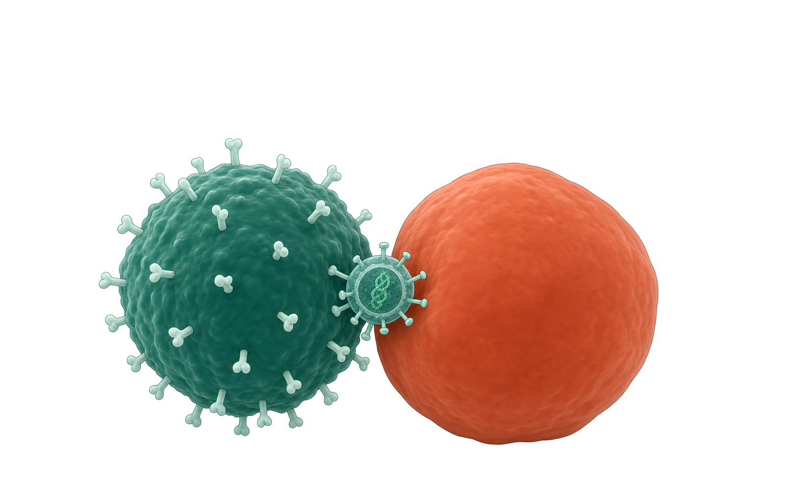
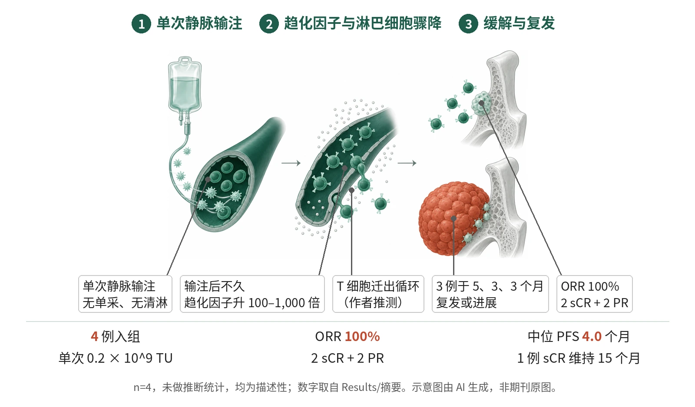

封面示意：慢病毒同时连接深绿色T细胞与赤陶红肿瘤块。图片由 AI 生成，非原文图片。
4 例复发难治骨髓瘤患者单次输注体内 BCMA CAR-T，随访最长 15 个月未见新增重要 ESO-T01 相关不良事件，1 例持续 sCR，中位 PFS 4.0 个月，另 3 例复发或进展后死亡。

- 单次静脉输注 ESO-T01，不单采、不清淋
- 输注后数小时淋巴细胞骤降，趋化因子升高
- 4 例均获缓解，1 例 sCR 维持 15 个月
- 3 例于 5、3、3 个月复发或进展
单次静脉输注体内 CAR 载体后，患者出现淋巴细胞骤降与趋化因子升高；4 例均获缓解，1 例维持 sCR，3 例在数月内伴髓外受累复发或进展。示意图由 AI 生成，依据原文结果绘制，非期刊原图，不代表分子比例
研究背景与待解问题
CAR-T 的可及性受制于生产、物流、等待时间和费用。美国一项真实世界研究显示，列入商业化 BCMA CAR-T 等候名单的复发难治多发性骨髓瘤（R/R MM）患者中，12 个月累计接受治疗的比例不足 40%，等待期间死亡率达 26%。
体内 CAR 技术用病毒或非病毒载体，把 CAR 直接递送到患者体内的内源 T 细胞，有望把个体化产品变为现成制剂，但临床数据仍然稀少。此前报道的首例人体研究 ESO-T01 只有 4 例患者、最长 3 个月随访。本文给出同一队列截至 2026 年 3 月的长期安全性与缓解持续性。
研究设计
这是一项 1 期、单臂、开放标签研究。2024 年 11 月至 2025 年 2 月筛选 6 例 R/R MM 患者，2 例不符合入排标准，最终 4 例入组。ESO-T01 是编码抗 BCMA CAR 的自失活慢病毒载体，单次静脉输注 0.2 × 10^9 转导单位，不做白细胞单采，也不做淋巴细胞清除。主要终点为安全性和耐受性；疗效、药代和药效为次要终点。
入组患者中位年龄 63 岁，既往中位 4 线治疗；4 例均有髓外病灶且存在直径超过 5 cm 的大块浆细胞瘤，1 例五重难治，1 例曾接受 BCMA-GPRC5D CAR-T。疗效按 2016 年 IMWG 标准评价，CRS 和 ICANS 按 ASTCT 标准分级。因 n = 4，未做效能计算和假设检验，结果均为描述性，并非组间比较设计。试验在申办方 EsoBiotec 被阿斯利康收购后终止。
核心结果
主要终点：安全性与耐受性
主要终点是安全性和耐受性。4 例患者均出现与载体相关的反应，表现为发热、低氧和低血压，对应 1–3 级双相 CRS；Patient 4 出现 1 级 ICANS。4 例均出现 3–4 级血液学毒性：中性粒细胞减少 75%、白细胞减少 50%、血小板减少 50%、淋巴细胞减少 75%。1 个月时 4 例中有 3 例恢复至 ≤2 级，其余 1 例基线即为 3 级中性粒细胞减少。
疗效与缓解持续时间
数据截止于 2026 年 3 月，最长随访 15 个月。客观缓解率 100%：2 例 sCR，2 例 PR。1 例（Patient 2，基线仅 2 处骨旁病灶）维持 sCR 15 个月。另 3 例分别在输注后 5、3、3 个月复发或进展，均有髓外受累；中位 PFS 为 4.0（范围 3.0–15.0）个月。
复发后的转归
3 例复发或进展者接受挽救治疗（2 例化疗、1 例 BCMA-GPRC5D 双特异性 CAR-T），最终均死亡，死因分别为感染、疾病进展和颅内出血，输注后总生存 5.5–10.9 个月。Patient 4 的脑脊液中 CAR-T 持续可检出，第 3 个月肿瘤细胞占有核细胞 98.78%，10.9 个月时死于疾病进展。
Patient 3 的体外 CAR-T
Patient 3 在第 3 个月进展，骨髓和髓外皮下病灶的 BCMA 阳性率分别为 0% 和 50%，随后在淋巴细胞清除化疗后输注 1.5 × 10^6 个细胞/kg 的体外 BCMA-GPRC5D CAR-T，达到 VGPR。体内 CAR-T 在第 10 天达峰，流式 86 个细胞/μl；体外 CAR-T 在第 16 天达峰，419 个细胞/μl。第 27 天她出现 IEC-HS 样综合征，第 32 天因颅内出血意识障碍，3 天后死亡。
免疫原性与整合位点
探索性分析中，Patient 1 和 2 基线即可检出抗 VSVG 抗体；抗 CAR 抗体除 Patient 1 轻度升高外均较低，对照为接受同一 VHH 的 ITP 患者 4 例、接受不同 scFv 的 MM 患者 5 例和 8 名健康供者。整合位点中，肿瘤或不良事件相关位点的克隆比例每例均不超过 3%，前 10 位克隆合计不足 10%，呈多克隆模式。
机制解读
原文实验证明：输注后数小时内，4 例患者均出现淋巴细胞骤降。Luminex 检测显示，包括 CXCL9、CXCL10、CXCL11 在内的多数细胞因子和趋化因子在输注后不久升高 100 至 1,000 倍，与淋巴细胞下降同步，第 2 天通常回落。该分析为 4 例患者、每例单次测量，属相关性观察。
整合位点分析在扩增高峰和输注后 3 个月均未检出高风险整合事件。Patient 1 和 3 复发时外周 CAR-T 已检测不到，而 Patient 4 脑脊液中的 CAR-T 持续存在却未能清除肿瘤，均为个案观察。
作者推测：作者推测，淋巴细胞消失主要源于趋化因子驱动的 T 细胞迁出循环，认为其比载体促黏附和病毒诱导凋亡更可能，但不能排除其他机制。三例早期复发者可能因髓外和脑脊液局部肿瘤负荷压倒 CAR-T，抑制性微环境和抗原下调也可能参与。
对 Patient 2 的持久 sCR，作者认为可能与基线肿瘤负荷最低、扩增期未用糖皮质激素、偏初始和中央记忆表型及年龄较轻等宿主因素有关，但无法归因于单一因素。
局限与不确定
- 样本仅 4 例；原文未做假设检验、效能计算或推断性统计，ORR 100% 与中位 PFS 4.0 个月均为描述性，不能外推到其他人群、载体或靶点。
- 最长 15 个月随访仅来自 1 例，另 3 例在输注后 5.5–10.9 个月内死亡，且死亡均发生在多种挽救治疗之后，难以单独归因于 ESO-T01。
- 淋巴细胞骤降与趋化因子的关联基于 4 例、每例单次测量，无技术重复；原文自述对其及髓外复发的机制理解不完整，且多项分析为事后分析。BCMA 表达仅 Patient 3 有复发时数据，另 2 例未知，抗原逃逸的作用无法判断。
- 抗体对照组很小（ITP 4 例、MM 5 例、健康供者 6 名或 8 名），未做统计比较；整合位点仅在扩增高峰和 3 个月检测，更晚期克隆演变未知。
临床/产业意义
若更大样本和更长随访能够确认，这些数据提示体内 CAR-T 无需单采和淋巴细胞清除，即可在重度经治、伴髓外病灶的患者中产生缓解，且随访期间未见免疫原性或整合相关毒性。
缓解持久性是主要短板，作者认为需优化平台、提高 CAR-T 持久性。若后续研究在复发时常规检测 BCMA 表达，才能厘清抗原逃逸的作用。Patient 3 的经历提示，体内 CAR-T 后再输注体外 BCMA-GPRC5D CAR-T 在个别患者可行，但该患者其后死亡，尚不足以支持一般性结论。